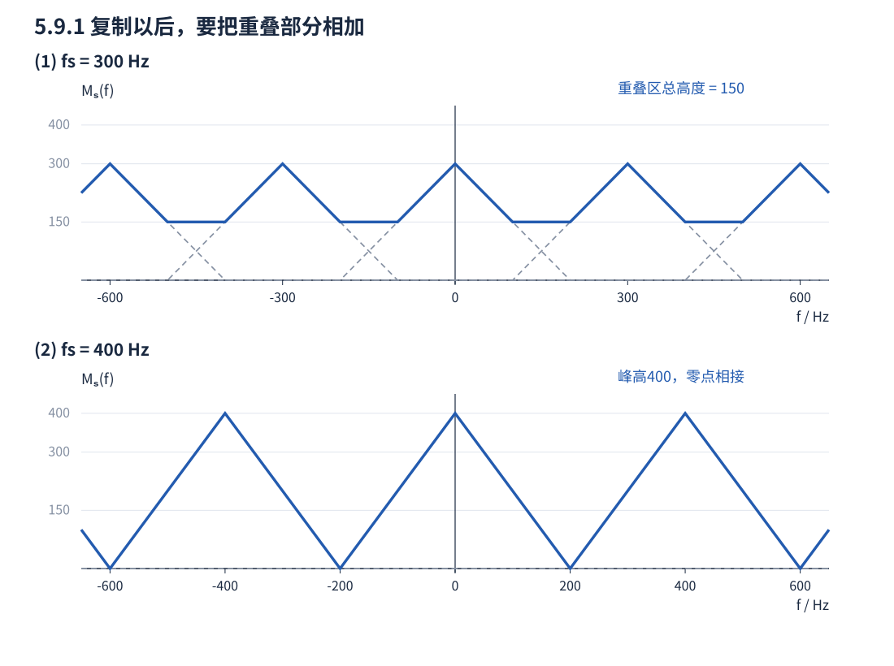

第五章 · 八题边抄边学
习题 5.9.1：抽样后，三角频谱怎样复制和重叠？
来源：赵恒凯等《现代通信原理》第2版，印刷第144页，PDF第164页；对照第五章课件第10–12页。下面的图是按原题函数重绘，不是另编题目。
题目与起手式
已知
分别画出以 和 理想抽样后的频谱。
先识别操作： 理想抽样是时域乘冲激列，频域是以 为间隔复制原谱，并乘 。因此不是只把原三角形平移，也不是把横轴压缩。
可抄解答 · 分步完成
① 。 每个副本的中心在 ，底边为 ，单个副本峰高300。相邻副本底边交叠100 Hz，必须把重叠部分的纵坐标相加。
例如 时，零频副本与300 Hz副本同时存在：
这段总谱是水平平台，不能把两条相交斜线当成最终答案。选一个周期 ，总谱为
② 。 副本中心在 ，底边为 ，峰高400。相邻三角形仅在零值端点相接，无频谱重叠；在 内

检查与答案
- 300 Hz小于 ，发生混叠；总谱的最小值为150，最大值为300。
- 400 Hz恰为本题的奈奎斯特速率。原谱在边缘为零，没有边缘冲激，故此题临界抽样可无失真恢复。
- 横轴用Hz，复制周期是300或400；不要把 标到Hz轴上。